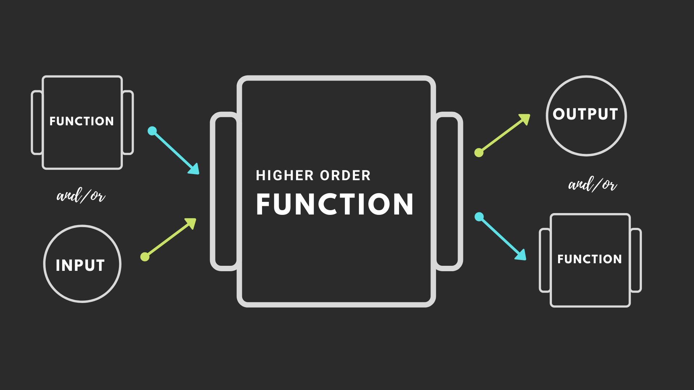
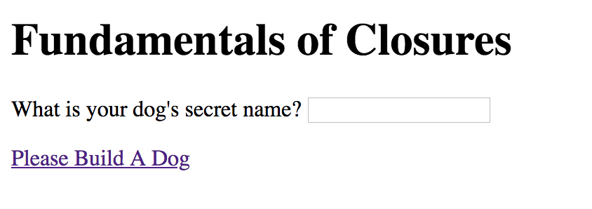

Higher-Order Functions in JavaScript
Higher-Order Functions
Review Study Guide
Click here to view and make a copy for reference.
Higher-Order Functions
A high-order function is a function that either:
- takes a function as an input (argument). We've seen these before!
- returns a function as the output. Functions that are returned from a function are called closures, and we will learn more about them later.
We will work with #1 before we get to closures.
Q: Do you remember what a function that is an argument for a function is called? Yes, a callback!
Q: Do you remember when you've seen callbacks before?
Yes, in jQuery!
Higher-Order Functions Visually
Q: What kind of function is on the upper left corner of this picture? Yes, a callback!
Q: What kind of function is at the bottom right corner of this picture? Yes, a closure!
Q: What kind of function is at the center of this picture?
Yes, a higher-order function!
Callbacks
Callbacks
What are some examples of times
we have already used callbacks?
//Examples:
Event listeners!
Yes, when a program listens for events to execute code!
Event listeners often handle DOM and/or user input!
Can you think of some examples of inputs?
- DOM input: when the document is "ready" to accept functions.
- user input: when functions are accepted when a user clicks, scrolls, mouses over, presses a key, submits info, etc.
Event Listeners
Referring to the image above, what kind of functions are event listeners?
Awesome sleuthing! Event listeners are functions that accept functions as input. Event listeners are therefore higher-order functions!
If event listeners are higher-order functions, what kind of functions do they accept as input? Yes, they accept callbacks!
Callback Example
Now let's see a callback in action in our code!
Can you explain the following lines of code?
$(".header-section").on("click", function() {
console.log("Header clicked!");
})
In the above lines of code, can you identify:
- All the functions (Hint: there are 3.)
- Which function is an argument? What do we call this function?
- Which function is therefore a higher-order function?
What is a callback?
In JavaScript, functions can be passed as arguments to other functions -- these are callbacks, inputs!
Functions can also be returned by other functions --
these are closures, outputs! More on this later.
Callbacks
A function that takes other functions as arguments or returns functions as its result is called a higher-order function.
The function that is passed as an argument
is called a callback.
This function is named a “callback” because at some point in time it is “called back” by the higher-order function.
Callbacks are great with Event Listeners!

Callback in Event Listeners
Let's revisit and dive into the functions in this jQuery code and refactor into JavaScript!
$(".header-section").on("click", function() {
console.log("Header clicked!");
})
//higher-order function declaration
//function declaration to pass in as a callback
//higher-order function execution
Example of using a callback
function fullName(firstName, lastName, callback) {
console.log("My name is " + firstName + " " + lastName);
callback(lastName);
}
function greeting(ln) {
console.log('Welcome, Mr. ' + ln);
};
fullName("Henry", "Golding", greeting);
Example of a callback - Refactored
You saw a function declaration on the slide before. Below is the function declaration refactored as a function expression.
function fullName(firstName, lastName, callback) {
console.log("My name is " + firstName + " " + lastName);
callback(lastName);
}
var greeting = function(ln) {
console.log('Welcome, Mr. ' + ln);
};
fullName("Henry", "Golding", greeting);
Can you add a farewell function?
How do you pass in the farewell function?
Another Example
var increment = function(n) { //function expression
return n + 1;
};
var square = function(n) { //function expression
return n*n;
};
var doMathSoIDontHaveTo = function (n, func){ //higher-order function
return func(n);
};
doMathSoIDontHaveTo(5, square); //takes the square function in as an argument
doMathSoIDontHaveTo(4, increment); //takes the increment function in as an argument
Another Example
function publish(item, author, callback) { // Generic function with common data
console.log(item);
var date = new Date();
callback(author, date);
}
function messages(author, time) { // Callback function with specific data
var sendTime = time.toLocaleTimeString();
console.log("Sent from " + author + " at " + sendTime);
}
function articles(author, date) { // Callback function with specific data
var pubDate = date.toDateString();
console.log("Written by " + author);
console.log("Published " + pubDate);
}
publish("How are you?", "Monique", messages);
publish("10 Tips for JavaScript Developers", "Jane Doe", articles);
settimeout()
This is a tool that helps mimic the time it takes data to travel or a program to execute.
Sets a timer, which executes a function or specified piece of code once the timer expires.
//setTimeout()
function hello(){
alert("Hello!")
}
setTimeout(hello, 3000)
Explain the code.
Identify the callback.
Identify the higher-order function.
Explain this code: with minions!
function reportOrders (minionOrders) {
if ( typeof minionOrders === "string"){
console.log(minionOrders);
} else if ( typeof minionOrders === "object"){
for (var item in minionOrders) {
console.log(item + ": " + minionOrders[item]);
}
}
}
function speakOrders (orders, callback) {
callback (orders);
}
speakOrders ({name:"Minion1031", speciality:"Scribe"}, reportOrders);
More Callbacks with Minions
Callback Exercise (Part 1)
Write a function, poemMaker, that takes in one parameter:
- a person's name (string).
The code should log to the console the sentence:
"[Person's name] is finer than fine wine.
Altruistic and noble for the modern time".

Callback Exercise (Part 2)
Create a second function, getUserInput that takes in three parameters:
- firstName (string)
- lastName(string)
- a callback
This function should concatenate the names and execute the poemMaker function as a callback.
Callback Exercise (Part 3)
How can we use getUserInput
to generate a second sentence?
Example: "So altruistic and noble and fine,
[person's name] will be remembered for all time."
Explain this code
function myWorkout(exercise1, exercise2, callback) {
alert('Started my workout. Today my workout includes ' + exercise1+ ' and ' + exercise2);
callback();
}
myWorkout('paused squats', 'lunges', function() {
alert('Finished my workout!');
});
Callback Exercise: Homework Time
Create a another callback function for the following code, and call it!
function doHomework(subject, callback) {
alert('Starting my ' + subject + ' homework.');callback();
}
function alertFinished() {
alert('Finished my homework');
}
doHomework('math', alertFinished);
Callbacks: Summary
- So far, we've learned that higher order functions are functions that accept functions as input and can also return functions as output.
- A function that is passed as an argument into another function is a callback.
- A function that is returned as an output of another function is a closure.
Congratulations! That wraps up callbacks. We are ready to start looking at closures!
Dev Tools
First, let's refresh our dev tools skills!
Click here
Closures
Higher-Order Functions Review
A high-order function is a function that either:
- takes a function as an input (argument). We've seen these before! Callbacks!
- returns a function as the output. Functions that are returned from a function are called closures, which we are about to cover!
To understand more about closures, we must first look at scopes.
Let's Review Scope
The scope of a variable or function is defined by:
- its location within the source code
- and its context (more on this later)
We have seen scope before with variables!
- A variable outside of a function has global scope.
- A variable inside of a function has local scope.
Good news! Nested functions, applicable to closures, have access to variables declared in their outer scope.
Lexical Scope
Lexical scope for a variable or a function is described to have a lexical or static context.
The context for the variable or function is static and does not change, meaning:
- If the variable or function is declared globally, its scope stays global.
- If the variable or function is declared locally, its scope stays local.
Lexical Scope
function init() {
var name = "Mozilla"; //name is a local variable created by init
function displayName() { //displayName() is the inner function, a closure
alert(name);
}
displayName();
}
init();
Scopes and Closures
Our friend Kyle Simpson
Introduction to closures!
You can go through more of these concepts in this document
What is a closure?
Closures are functions that refer to independent (free) variables. In other words, the function defined in the closure ‘remembers’ the environment in which it was created.
A closure is created when an inner function is made accessible from outside of the function that created it. This typically occurs when an outer function returns an inner function.
This means that a closure remembers all of the variables (and their values) that were in scope at the time.
Seriously, what?
Closures
Closures have many practical use cases.
- One important use case is to maintain a private reference to a variable in the outer scope.
- Closures can make only certain things in our function accessible by other parts of our program.
- Developers can also associate an object's data with one or more methods, as we have seen in object-oriented programming.
Examples!
function numberGenerator() {
// Local “free” variable that ends up within the closure
var num = 1;
function checkNumber() {
console.log(num);
}
num++;
return checkNumber;
}
var number = numberGenerator();
number(); // 2
Closures
Often closures are created when a function
is the output of another function.
function sayHello() {
var say = function() { console.log(hello); }
// Local variable that ends up within the closure
var hello = 'Hello, world!';
return say;
}
var sayHelloClosure = sayHello();
sayHelloClosure(); // ‘Hello, world!’
Explaining the code
In the example on the previous slide, the function numberGenerator creates a local “free” variable num (a number) and checkNumber (a function which prints num to the console).
The function checkNumber does not have any local variables of its own — however, it does have access to the variables within the outer function, numberGenerator, because of a closure.
Therefore, it can use the variable declared in numberGenerator to successfully log it to the console even after numberGenerator has returned.
Let's talk about this function
function sayHello2(name){
var text = 'Hello ' + name; //Local variable
var say = function() {
console.log(text)
}
return say;
}
var say2 = sayHello2('Bob');
say2(); // logs "Hello Bob"
Another example
var x = 10;
function foo(a) {
var b = 20;
function bar(c) {
var d = 30;
return boop(x + a + b + c + d);
}
function boop(e) {
return e * -1;
}
return bar;
}
var moar = foo(5); // Closure
moar(15);
Scopes and Closures
function add(value1){
return function doAdd(value2){
return value1 + value2;
};
}
var increment = add(1);
var foo = increment(2);
//foo equal 3
The add() function returns its inner function of doAdd().
By returning a reference to an inner function, a closure is created.
Scopes and Closures
Things to Remember
- The previous code has a closure because the anonymous function is declared inside another function.
- In JS, if you use the function keyword inside another function, you are creating a closure.
Scopes and Closures
Cake Example

Scopes and Closures
Cake Example Explained
If I am making a cake in my kitchen, I use all kind of tools and ingredients, but the only output that you see is the cake I make for you.
You don’t have access to all the things in my kitchen but the cake has access to all the properties that made it (when it was being created in the kitchen).
Scopes and Closures
function nameAdder(x){
return function(y){
return x + y;
};
}
var add5 = makeAdder(5);
var add10 = makeAdder(10);
Log to the console these variables. What do you see?
Review the Recipe

Puppy Builder: Exercise
Build a new root folder and HTML file.

Puppy Builder: Exercise
Turn this JS into a closure and uses the user's input
$(document).ready(function(){
function buildADog(){
var dogName = "Coach";
function dogFactory(){
alert(dogName);
}
dogFactory();
}
$("#builddog").on("click", function(){
buildADog();
});
});
Exercise: Password Validator
Create the following UI using Flexbox and Bootstrap.

Exercise: Password Validator
Create a function in your JavaScript that tests to see if the two passwords match.
Let the user know if the passwords match and they were successful, or if they entered mis-matched passwords.
More Examples of Closures
SitepointClosures: Summary
Closures are functions that can reference variables in its outer scope: inside its parent function as well as outside its parent function.
Closures ‘remember’ the environment, its variables and their values, in which it was created, and can be accessible from outside of the function that created it.
Closures are often returned as the inner function of an outer function.
Higher-Order Functions Roundup
Click here to review.
THE END
Thank you for your attention!